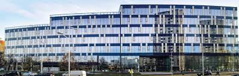

Факултет техничких наука (ФТН)
Факултет техничких наука је једна од најсавременије организованих високообразовних институција у региону са традицијом дугом преко шест деценија, познат и признат у целом свету, а инжењери образовани на овом Факултету, раде и постижу запажене резултате у сваком предузећу које има везе са технологијом, производњом, образовањем или услугама, јер од свих занимања која се у нашој земљи образују, техника је и даље најтраженија.
Факултет је основан 18. маја 1960. године као Машински факултет. Снажан развој привреде и потребе друштва допринеле су покретању нових струка електротехнике и грађевинарства, тако да је 1974. године Машински факултет прерастао у Факултет техничких наука.
Од тада па до данас, покренуте су још и студије из области:
• Саобраћаја - 1979. године
• Архитектуре - 1996. године
• Индустријског инжењерства и инжењерског менаџмента, Инжењерства заштите животне средине и Графичког инжењерства и дизајна - 1999. године
• Поштанског саобраћаја и телекомуникација - 1999. године
• Мехатронике - 2002. године
• Магистарске студије из Математике у техници - 2003. године
• Докторске студије - 2006. године
• Геодезије и геоматика - 2007. године
• Инжењерства заштите на раду - 2010. године
• Управљања ризиком од катастрофалних догађаја и пожара, Рачунарске графике и Софтверских и информационих технологија (одељење у Инђији) - 2011. године
• Софтверских и информационих технологија (одељење у Лозници) - 2012. године
• Електроенергетски софтверски инжењеринг (данас Примењено софтверско инжењерство); Софтверско инжењерство и информационе технологије; Сценска архитектура, техника и дизајн; Чисте енергетске технологије; Мерење и регулација; Биомедицинско инжењерство - 2013. године
• Инжењерство информационих система - 2014. године
• Информациони инжењеринг; Информациони и аналитички инжењеринг - 2015. године
• Инжењерство иновација - 2016. године